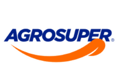

Evolución Profesional

Live Performance Coordinator
PedidosYa (2023 - Presente)Hito: Creación del "LiveOps Engine" (AI3). Multipliqué la capacidad del equipo por 5X y automaticé el 82% de las gestiones operativas.
Logistics Supervisor
PedidosYa (2021 - 2023)Hito: Lideré la optimización de la operación de Los Ángeles y posteriormente colaboré en la gestión y optimización logística de zona Sur-Norte (Rancagua, San Fernando, Talca y Linares). Desarrollé herramientas de detección de fraude y alertas sistémicas.

Jefe de Transporte
Fullify (2020 - 2021)Hito: Liderazgo de flota de última milla y optimización de costos para e-commerce durante la alta demanda de pandemia.

Carrera Ascendente en Operaciones
Agrosuper (2011 - 2020)Hito: Evolución desde Operador de Bodega hasta Analista de Operaciones y Jefe de Turno, demostrando resiliencia y crecimiento desde la base.